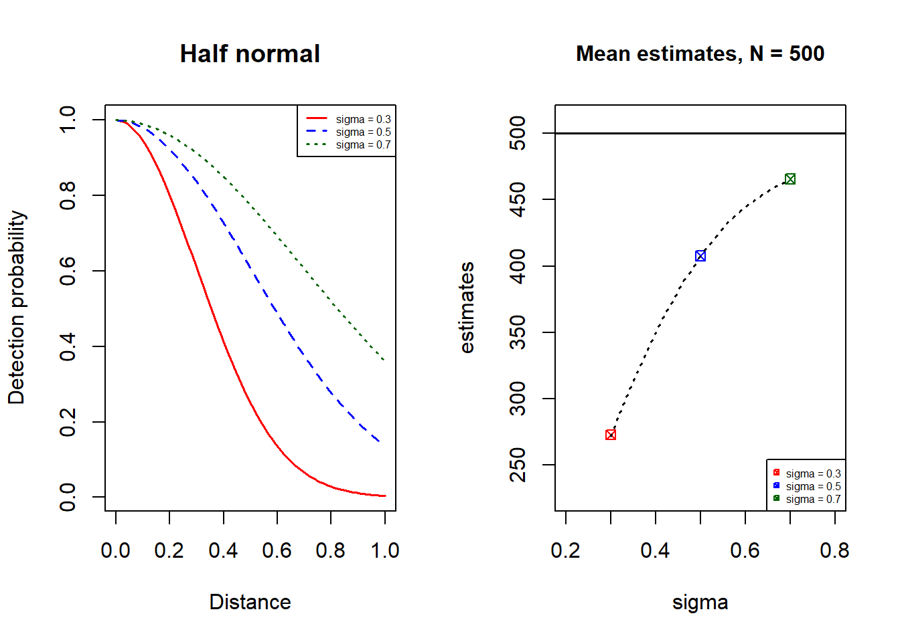

Chapter 2 Mark-recapture
Mark-recapture is a powerful technique used in ecology and wildlife biology to estimate the population size of a specific animal or species within a given area. This method is based on the concept of sampling, marking, and then recapturing individuals from the target population. By utilizing this approach, researchers can extrapolate the population size and gain valuable insights into population dynamics, species abundance, and conservation efforts.
The fundamental principle behind mark-recapture lies in the idea that the probability of capturing an individual within the population is the same for each capture event. Once an individual is captured, it is marked in some way, making it distinguishable from other members of the population. The marked individuals are then released back into the wild, allowing them to mix freely with the unmarked individuals. Subsequently, during the recapture phase, researchers perform another sampling effort, capturing a new group of individuals from the population. The proportion of marked individuals in the recaptured sample allows scientists to estimate the total population size based on the assumption of a closed population.
In this chapter, we explore the principles and applications of mark-recapture methods, focusing on the Lincoln-Peterson MR estimator in closed populations and the importance of simulation studies to evaluate method performance.
2.1 Closed populations
The Lincoln-Peterson MR estimator is one of the most classic and widely used methods for estimating the population size of closed populations. Proposed independently by Peterson in the 1890s and by Lincoln in the 1920s, this estimator relies on two sampling events: the initial capture, where a subset of the population is marked, and the subsequent recapture, where the marked individuals are identified among the newly captured individuals.
The Chapman mark-recapture estimator is a modified version of the traditional Lincoln-Peterson estimator with less bias and is less affected by zeros.
Theorem 2.1 Chapman MR estimator (1951) \[\hat{N}_{CPM} = \frac{(n_{1} + 1)(n_{2} + 1)}{m_{2}+1}-1\]
where:
\(\hat{N}_{CPM}\) is the estimated population size.
\(n_{1}\) is the number of individuals captured and marked in the first occasion.
\(n_{2}\) is the number of marked individuals recaptured in the second occasion.
\(m_{2}\) is the number of recaptured individuals that were already marked in the first occasion.
The accuracy of this estimate relies on a number of assumptions being met.
In other words, no individuals are added to or removed from the population through birth, death, immigration, or emigration during the study period. An exception is when there are equal proportions of additions or deletions for marked and unmarked individuals during the sampling period. In cases where significant movements occur, potential bias might need to be introduced to the results or more advanced models might be needed to account for population dynamics.
Sometimes after initial capture, animals may learn to avoid the traps or area where the capture occurred, causing them to be captured less frequently (“trap shy”). The opposite (“trap happy”) may also occur, making them more likely to be captured. Individuals may also inherently different capture probabilities, and if ignored, the resulting abundance estimates are likely to be negatively biased.
It is possible that marks may fade, fall off, or be lost over time, making individuals indistinguishable from unmarked ones during recapture events. Ensuring durable and effective marking techniques is essential to maintain the integrity of the mark-recapture process and achieve unbiased estimates.
2.2 Simulation study
Simulation studies have become indispensable in ecology and conservation research, providing a controlled and repeatable approach to evaluate the performance of estimation methods. In this section, we will present the results of a simulation study that aims to evaluate the performance of the Lincoln-Peterson MR estimator in closed populations. We will create artificial datasets with with known population sizes, detectability patterns to assess the accuracy and precision of estimators under different scenarios.
For each scenario we simulate 999 surveys, with each survey having a simulated sample size \(N = 500\).
2.2.1 Scenario 1: When the underlying assumptions are met
We first looked into the performance of mark-recapture estimator when all the above assumptions are met. Specifically, we will create artificial datasets to mimic a closed population, equal probability of detection of marked and unmarked individuals (\(p = 0.4\)), and random sampling. For each replication, we will compare the estimated population size to the true population size (\(N = 500\)). We then calculate the mean estimate and the variance of the estimates across replications and thus check with the coverage probability.
library(circular)
library(fields)
sim.mr <- function(n, move, equal.p, param){
#browser()
## 1. object positions
df <- data.frame(id=rep(1:n, each = 2), obs=rep(1:2, n),
x=NA, y=NA, distance=NA, detect=NA)
df$x[df$obs==1] <- runif(n, 0, 2); df$y[df$obs==1] <- runif(n, 0, 2)
df$distance[df$obs==1] <- df$x[df$obs==1] - 1
if (move==0){
angle <- as.numeric(rwrappedcauchy(n, mu = circular(0),rho = 0))
distance <- abs(rnorm(n, 0.1, 0.1))
df$x[df$obs==2] <- df$x[df$obs==1] + distance*cos(angle)
df$y[df$obs==2] <- df$y[df$obs==1] + distance*sin(angle)
}else{
df$x[df$obs==2] <- runif(n, 0, 2)
df$y[df$obs==2] <- runif(n, 0, 2)}
df$distance[df$obs==2] <- df$x[df$obs==2] - 1
## 2. detection probability & Mark-Recapture
if (equal.p == TRUE){
p1 <- p2 <- param
}else{
p1 <- exp(-abs(df$distance[df$obs==1])^2/(2*param^2))
p2 <- exp(-abs(df$distance[df$obs==2])^2/(2*param^2))}
df$detect[df$obs==1] <- rbinom(n, 1, p1) # first occasion
df$detect[df$obs==2] <- rbinom(n, 1, p2) # second occasion
## 3. return
return(df)
}sim.mismatch <- function(df, equal.p, param){
#browser()
## 1. get distance between every pair of detected objects
df1 <- subset(df, df$obs==1 & df$detect==1)[ , c("x", "y")]
df2 <- subset(df, df$obs==2 & df$detect==1)[ , c("x", "y")]
dist.pair <- as.data.frame(rdist(df1, df2))
dist.pair$unique <- 1:nrow(dist.pair)
df1$id <- 1:nrow(df1); df1$detect <- df1$obs <- rep(1, nrow(df1))
## 2. using min distance to decide mismatching
for (i in 1:(ncol(dist.pair)-1)) {
min.index <- which.min(dist.pair[, i])
if (length(min.index)>0){
if (dist.pair[min.index, i] < 0.1) {detect2 <- 1}
else if (dist.pair[min.index, i] > 0.9) {detect2 <- 0}
else{
if (equal.p==TRUE) {detect2 <- rbinom(1, 1, param)}
else {detect2 <- rbinom(1, 1, exp(-dist.pair[min.index, i]^2/(2*param^2)))}}
}else{detect2 <- 0} # if no obs1 detection to match
if (detect2==1){ # if matched
df1[nrow(df1) + 1, ] <- c(df2$x[i], df2$y[i], dist.pair$unique[min.index], 2, 1)
dist.pair <- dist.pair[-min.index, ]
}else{ # if no match
id <- max(unique(df1$id))+1
df1[nrow(df1) + 1, ] <- c(df2$x[i], df2$y[i], id, 1, 0)
df1[nrow(df1) + 1, ] <- c(df2$x[i], df2$y[i], id, 2, 1)}}
for (i in dist.pair$unique){
df1[nrow(df1) + 1, ] <- c(df1$x[df1$id==i], df1$y[df1$id==i], i, 2, 0)}
## 3. return new dataset
df1 <- df1[order(df1$id), ]
return(df1)
}chapman.mr <- function(n, move, equal.p, param, mismatching){
df <- sim.mr(n, move, equal.p, param)
if (mismatching==TRUE){df <- sim.mismatch(df, equal.p, param)}
S1 <- nrow(df[df$obs==1 & df$detect==1, ]) # first occasion
S2 <- nrow(df[df$obs==2 & df$detect==1, ]) # second occasion
B <- df$detect[df$obs==1]==1 & df$detect[df$obs==2]==1
B <- length(B[B==TRUE]) # caught by both occasions
N.hat <- (S1+1)*(S2+1)/(B+1)-1 # abundance estimate
var.N <- (S1+1)*(S2+1)*(S1-B)*(S2-B)/(((B+1)^2)*(B+2))
d <- exp(1.96*sqrt(log(1+(var.N/(N.hat^2)))))
return(c(N.hat, d))
}boot.mr <- function(n, move, equal.p, param, mismatching){
input <- rep(n, 999)
ests <- lapply(input, chapman.mr, move, equal.p, param, mismatching)
df.ests <- data.frame(t(sapply(ests,c)))
colnames(df.ests) <- c("N.hat", "d")
return(df.ests)
}ests <- boot.mr(500, 0, TRUE, 0.4, FALSE) # bootstrap estimates
ci <- mean(ests$N.hat) + c(-1, 1)*1.96*sqrt(var(ests$N.hat)/999)
bias <- mean((ests$N.hat-500)/500) # mean relative bias
check.pcover <- 500 > ests$N.hat/ests$d & 500 < ests$N.hat*ests$d
coverage.p <- length(check.pcover[check.pcover==TRUE])/length(check.pcover)
ci; sprintf("%1.2f%%", bias*100); coverage.p## [1] 497.7029 501.9331## [1] "-0.04%"## [1] 0.951952The result above shows that Chapman estimator of abundance is unbiased as the 95% CI covers the true population size and the mean percentage relative bias is very close to 0.
2.2.2 Scenario 2: When there has imperfect matching
We are interested in how imperfect matching influence the abundance estimate given that all other assumptions (e.g. equal capture probability) are met. The result below shows that failure to account for imperfect matching leads to largely biased abundance estimate.
N <- 200
ests <- boot.mr(N, 0, TRUE, 0.4, TRUE) # bootstrap estimates
ci <- mean(ests$N.hat) + c(-1, 1)*1.96*sqrt(var(ests$N.hat)/999)
bias <- mean((ests$N.hat-N)/N) # mean relative bias
check.pcover <- N > ests$N.hat/ests$d & N < ests$N.hat*ests$d
coverage.p <- length(check.pcover[check.pcover==TRUE])/length(check.pcover)
ci; sprintf("%1.2f%%", bias*100); coverage.p## [1] 124.5352 125.9197## [1] "-37.39%"## [1] 02.2.3 Scenario 3: When inherent capture probabilities are different
In this scenario, we aim to examine the impact of deviations from equal detectability assumption on the accuracy and bias of mark-recapture method. We make probability of detection falls off with distance from the transect line following half-normal distribution in both occasion. Different half-normal parameters are fitted to investigate how they affect the estimate.
2.2.3.1 i. complete random animal movement
When animals move completely random between two occasions, the result shows that larger value of sigma, i.e. when detectability decreases less rapidly with increasing distance, leads to more precise estimates. The abundance estimate is rather accurate for each detection function used (\(\sigma = 0.3, 0.5, 0.7\)). The explanation behind this is that the estimator is likely to be biased when the probabilities of detection are correlated by the two observers, however, in this case complete random animal movement does not lead to a correlated detection probabilities and thus negatively biased estimates.
plot1.1 <- function(n){
N1 <- boot.mr(n, 1, FALSE, 0.3, FALSE)$N.hat
N2 <- boot.mr(n, 1, FALSE, 0.5, FALSE)$N.hat
N3 <- boot.mr(n, 1, FALSE, 0.7, FALSE)$N.hat
boxplot(c(N1, N2, N3)~rep(c(0.3, 0.5, 0.7), each = 999),
data=ToothGrowth,
main="Abundance estimates for different detection functions",
xlab="sigma",
ylab="Estimates",
border="black")
abline(h=500, col="blue", lty=2, lwd=1.5)
}plot1.1(500) # N = 500
2.2.3.2 ii. random animal movement over short distances
We then take a look at the case where animals make random movement over short distances between two occasions. As shown in the graph below, when detectability decreases more rapidly with increasing distance (\(\sigma = 0.3\)), the estimate are more negatively biased. In contrast, if there has less difference between detection probability on the transect and deetction probability on the truncation (\(\sigma = 0.7\)), then abundance estimate are less negatively biased.
plot1.2 <- function(n){
#browser()
par(mfrow=c(1,2))
## plot 1: half-normal
x <- seq(0, 1, 0.01)
y1 <- exp(-x^2/(2*0.3^2))
y2 <- exp(-x^2/(2*0.5^2))
y3 <- exp(-x^2/(2*0.7^2))
plot(x, y1, main = "Half normal", xlab = "Distance", ylab = "Detection probability",
type="l", lwd=1.5, col="red", xlim=c(0, 1))
lines(x, y2, col="blue", lwd=1.5, lty=2)
lines(x, y3, col="darkgreen", lwd=1.5, lty=3)
legend(x = "topright", legend = c("sigma = 0.3", "sigma = 0.5", "sigma = 0.7"),
lty = c(1, 2, 3), col = c("red", "blue", "darkgreen"), lwd = 1.5, cex=0.5)
## plot 2: bootstrap abundance estimates
N1 <- boot.mr(n, 0, FALSE, 0.3, FALSE)$N.hat
N2 <- boot.mr(n, 0, FALSE, 0.5, FALSE)$N.hat
N3 <- boot.mr(n, 0, FALSE, 0.7, FALSE)$N.hat
plot(0.3, mean(N1), pch=7, col="red", xlim=c(0.2, 0.8), ylim=c(min(N1), n+10), xlab="sigma", ylab="estimates")
title(main="Mean estimates, N = 500", cex.main=1)
points(0.5, mean(N2), pch=7, col="blue")
points(0.7, mean(N3), pch=7, col="darkgreen")
abline(h=n, lwd=1.5)
x <- seq(0.3, 0.7, 0.02)
y <- NULL
for (i in x){
meanN <- mean(boot.mr(n, 0, FALSE, i, FALSE)$N.hat)
y <- c(y, meanN)}
lines(x, y, lty=3, lwd=1.5)
legend(x = "bottomright", legend = c("sigma = 0.3", "sigma = 0.5", "sigma = 0.7"),
pch = c(7, 7, 7), col = c("red", "blue", "darkgreen"), cex=0.5)
}plot1.2(500) # N = 500
2.3 Further Reading
Borchers, D.L., Buckland, S.T. and Zucchini, W. (2002). Estimating Animal Abundance: Closed Populations. Springer London. https://doi.org/10.1007/978-1-4471-3708-5